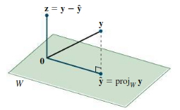

Orthogonality
Table of Contents
1. Orthogonality
Two vectors \(\mathbf{u}\) and \(\mathbf{v}\) are called orthogonal when \(\mathbf{u} \cdot \mathbf{v} = 0\), or when the norm (magnitude) of the two vectors satisfies the famous rule of Pythagoras: \(\left | \mathbf{u} \right |^2 + \left | \mathbf{v} \right |^2 = \left | \mathbf{u} + \mathbf{v} \right |^2\).
More broadly, we can say that if \(\mathbf{v} \in \mathbb{R}^n\), and \(W\) is a subspace of \(\mathbb{R}^n\), that \(\mathbf{v}\) is orthogonal to \(W\) if it is orthogonal to every vector in \(W\). We call \(W^{\perp}\) the orthogonal complement of \(W\), consisting of all the vectors orthogonal to \(W\).
An important application of orthogonality comes in the form of vector spaces. We can say that the row space of \(A\) is orthogonal to the nullspace of \(A\):
\begin{align} (\text{Row }A)^{\perp} = \text{Nul }A \end{align}This is because by the definition of the nullspace, vectors in the nullspace, when multiplied by vectors in the row space, yield the zero vector. Similarly:
\begin{align} (\text{Col }A)^{\perp}= \text{Nul } (A^T) \end{align}Given \(W\) a susbpace of \(\mathbb{R}^n\), we can then use (1) to find \(W^{\perp}\). If \(W\) has \(m\) vectors as its basis, we can write the basis elements of \(W\) as the rows of an \(m \times n\) matrix \(A\). Then, \(W^{\perp}\) is just the nullspace of \(A\).
1.1. Orthogonal Sets
An orthogonal set is a set of vectors in which every pair of distinct vectors are orthogonal.
We can say that an orthogonal set of nonzero vectors \(\{\mathbf{u}_1, \dots , \mathbf{u}_n\}\) is always linearly independent. We can prove this by contradiction — say that it is not linearly independent, and then:
\begin{align} \mathbf{u}_n &= c_1\mathbf{u}_1 + c_2\mathbf{u}_2 + \cdots + \mathbf{c}_{n-1}\mathbf{u}_{n-1} \notag \\ \mathbf{u}_n \cdot \mathbf{u}_n &= c_1\mathbf{u}_1 \cdot \mathbf{u}_n + c_2\mathbf{u}_2 \cdot \mathbf{u}_n + \cdots + c_{n-1}\mathbf{u}_{n-1}\cdot \mathbf{u}_{n} \notag \\ \mathbf{u}_n \cdot \mathbf{u}_n &= 0 \notag \end{align}However, this is a contradiction since the only way for \(\mathbf{u}_n \cdot \mathbf{u}_n = 0\) is if \(\mathbf{u}_n=0\), which is not allowed as this is a set of nonzero vectors. Therefore, they must all be linearly independent.
1.2. Orthogonal Basis
In a vector space \(V\), an orthogonal basis is a basis for \(V\) that is an orthogonal set.
If \(\{\mathbf{u}_1, \mathbf{u}_2, \dots ,\mathbf{u}_n\}\) is an orthogonal basis for a vector space \(V\), and we want to write for some \(\mathbf{y} \in V\) as a linear combination of the elements in the orthogonal basis:
\begin{align} y = c_1\mathbf{u}_1 + c_2\mathbf{u}_2 + \cdots + c_n\mathbf{u}_n \notag \end{align}Since the basis is orthogonal, we have a shortcut:
\begin{align} \boxed{c_j = \frac{\mathbf{y} \cdot \mathbf{u}_j}{\mathbf{u}_j \cdot \mathbf{u}_j} \; \forall \: 1 \leq j \leq n} \end{align}We can see that this works if we multiply our original equation by \(\mathbf{u}_j\) on both sides. We then have \(\mathbf{y} \cdot \mathbf{u}_j = 0 + \cdots + c_j \mathbf{u}_j \cdot \mathbf{u}_j + \cdots + 0\), which simplifies to (3) if we isolate \(\mathbf{c}_j\).
1.3. Orthogonal Matrices
A set or basis in some subspace of \(\mathbb{R}^n\) is an orthonormal set or basis if it is an orthogonal set in which every vector has length \(1\). We can switch from orthogonal to orthonormal by dividing each vector by its magnitude.
A real square matrix is an orthogonal matrix if it has orthonormal columns. Such a matrix \(U\) must satisfy \(U^TU = I\), or \(U^T\) is the inverse of \(U\). Additionally, if \(U\) and \(V\) are orthogonal, then \(UV\) is also orthogonal since \((UV)^T = V^TU^T = V^{-1}U^{-1} = (UV)^{-1}\).
One interesting fact is that if we have any \(m \times n\) orthogonal matrix \(U\), for any \(\mathbf{x} \in \mathbb{R}^n\) we have:
\begin{align} \left | U\mathbf{x} \right | = \left | \mathbf{x} \right | \end{align}In other words, multiplying \(\mathbf{x}\) by an orthogonal matrix doesn't change its length even if \(U\mathbf{x}\) is in a different dimension than \(\mathbf{x}\).
1.3.1. Orthonormal Basis
An orthonormal basis is convenient to change into. If we have an orthonormal basis \(\mathcal{B}\) with vectors \(\{\mathbf{u}_1, \mathbf{u}_2, \dots , \mathbf{u}_n\}\), and since the inverse of the change of basis matrix \(P_{\mathcal{B}}^{-1}\) is equal to \(P_{\mathcal{B}}^T\), then:
\begin{align} [\mathbf{x}]_{\mathcal{B}} = P_{\mathcal{B}}^{-1}\mathbf{x} = P_{\mathcal{B}}^T\mathbf{x} = \begin{bmatrix} \mathbf{u}_1 \cdot \mathbf{x} \\ \mathbf{u}_2 \cdot \mathbf{x} \\ \vdots \\ \mathbf{u}_n \cdot \mathbf{x}\end{bmatrix} \notag \end{align}1.4. Orthogonal Projections
Say we want to find the projection of some vector \(\mathbf{y}\) on some subspace \(W\). Call this projection \(\mathbf{\hat{y}}\); then, we can express \(\mathbf{y}\) as the sum of this projection with some other vector \(\mathbf{z}\):
\begin{align} \mathbf{y} = \mathbf{\hat{y}} + \mathbf{z} \end{align}where \(\mathbf{\hat{y}} \in W\) and \(\mathbf{z} \in W^{\perp}\). We can intuitively understand that this works for a certain dimension:

To find \(\mathbf{\hat{y}}\), we consider an orthogonal basis \(\{\mathbf{u}_1, \mathbf{u}_2, \dots ,\mathbf{u}_n\}\). We know that the dot product of a vector and a unit vector is the projection of that vector in the direction of the unit vector. For the projection along a non-unit vector, then, we must divide by the magnitude:
\begin{align} (\mathbf{y} \cdot \mathbf{\hat{u}}_i) \mathbf{\hat{u}}_i = \left(\frac{\mathbf{y} \cdot \mathbf{u}_i}{\left|\mathbf{u}_i\right|}\right)\frac{\mathbf{u}_i}{\left|\mathbf{u}_i\right|} = \frac{\mathbf{y} \cdot \mathbf{u}_i}{\left|\mathbf{u}_i\right|\left|\mathbf{u}_i\right|} \mathbf{u}_i = \frac{\mathbf{y} \cdot \mathbf{u}_i}{\mathbf{u}_i \cdot \mathbf{u}_i} \mathbf{u}_i \notag \end{align}The total projection onto \(W\) is the vector sum of all the projections onto each of these basis vectors:
\begin{align} \boxed{\mathbf{\hat{y}} = \sum_{i = 1}^{n} \frac{\mathbf{y} \cdot \mathbf{u}_i}{\mathbf{u}_i \cdot \mathbf{u}_i} \mathbf{u}_i} \end{align}1.4.1. With Orthonormal Basis
If we have an orthonormal basis \(\{ \mathbf{u}_1, \mathbf{u}_2, \dots , \mathbf{u}_k \}\) for W, then we can just directly take the dot product of \(y\) with each of the basis vectors to obtain the projection of \(y\) onto each basis vector (since they are unit vectors). We can write \(\hat{y}\) as:
\begin{align} \mathbf{\hat{y}} = \begin{bmatrix} \: \\ \mathbf{u}_1 & \mathbf{u}_2 & \cdots & \mathbf{u}_k \\ \: \end{bmatrix} \begin{bmatrix} \mathbf{y} \cdot \mathbf{u}_1 \\ \mathbf{y} \cdot \mathbf{u}_2 \\ \vdots \\ \mathbf{y} \cdot \mathbf{u}_k\end{bmatrix} \notag \end{align}If we call the matrix \(U\) the matrix whose columns are the basis vectors, then we can write this as:
\begin{align} \boxed{\mathbf{\hat{y}} = UU^T\mathbf{y}} \end{align}2. Gram-Schmidt Process
Since projections only work for an orthogonal basis, there comes an issue when we are given a basis that is not orthogonal, yet we still want to find the projection. Thus, we need the Gram-Schmidt process to turn an arbitrary basis for \(W\), \(\{\mathbf{x}_1, \mathbf{x}_2, \dots , \mathbf{x}_k\}\), into an orthogonal basis \(\{\mathbf{v}_1, \mathbf{v}_2, \dots, \mathbf{v}_k\}\).
First, we take:
\begin{align} \mathbf{v}_1 = \mathbf{x}_1 \notag \end{align}Then, we want the \(\mathbf{v}_2\) to be perpendicular to \(\mathbf{v}_1\). To do this, we start with \(\mathbf{x}_2\) and subtract its projection along \(\mathbf{v}_1\) — this gives us a vector perpendicular to \(\mathbf{v}_1\):
\begin{align} \mathbf{v}_2 = \mathbf{x}_2 - \frac{\mathbf{x}_2 \cdot \mathbf{v}_1}{\mathbf{v}_1 \cdot \mathbf{v}_1}\mathbf{v}_1 \notag \end{align}Now, \(\{\mathbf{v}_1, \mathbf{v}_2\}\) has the same span as \(\{\mathbf{x}_1, \mathbf{x}_2\}\), but now \(\mathbf{v}_1\) and \(\mathbf{v}_2\) are orthogonal. We can proceed with \(\mathbf{v}_3\), taking \(\mathbf{x}_3\) and subtracting from it its projection on the subspace defined by \(\{\mathbf{v}_1, \mathbf{v}_2\}\):
\begin{align} \mathbf{v}_3 = \mathbf{x}_3 - \frac{\mathbf{x}_3 \cdot \mathbf{v}_1}{\mathbf{v}_1 \cdot \mathbf{v}_1}\mathbf{v}_1 - \frac{\mathbf{x}_3 \cdot \mathbf{v}_2}{\mathbf{v}_2 \cdot \mathbf{v}_2}\mathbf{v}_2 \notag \end{align}This is the central idea to Gram-Schmidt: subtract from every new vector its projections in the directions already set. In general, we have:
\begin{align} \boxed{\mathbf{v}_k = \mathbf{x}_k - \sum_{i = 1}^{k-1} \frac{\mathbf{x}_k \cdot \mathbf{v}_i}{\mathbf{v}_i \cdot \mathbf{v}_i}\mathbf{v}_i} \end{align}Usefully, the space spanned by the first \(j\) vectors in the new orthogonal basis is the same as the span of the first \(j\) vectors in the original basis.